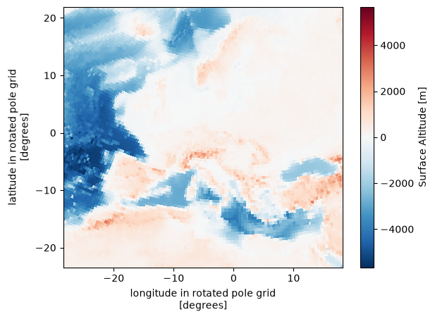
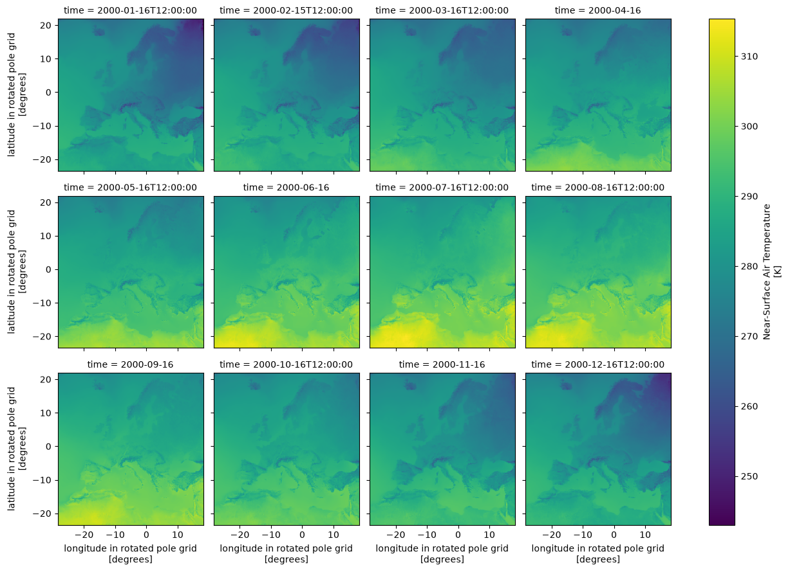

%load_ext autoreload
%autoreload 2
Examples of CORDEX-CMIP6 cmorization#
Introduction#
This notebook demonstrates how climate model output can be reformatted and standardized using CMOR (Climate Model Output Rewriter) for the CORDEX-CMIP6 framework.
What is CMORization?
CMORization is the process of converting raw model output into standardized netCDF files
It ensures compliance with CF (Climate and Forecast) conventions
It automatically handles unit conversions, time resampling, and metadata standardization
In this notebook, we’ll show examples of how to cmorize different types of climate data (fixed fields, monthly, and sub-daily data).
!ls ../Tables
CORDEX-CMIP6_1hr.json CORDEX-CMIP6_formula_terms.json
CORDEX-CMIP6_3hr.json CORDEX-CMIP6_fx.json
CORDEX-CMIP6_6hr.json CORDEX-CMIP6_grids.json
CORDEX-CMIP6_CV.json CORDEX-CMIP6_mon.json
CORDEX-CMIP6_coordinate.json CORDEX-CMIP6_remo_example.json
CORDEX-CMIP6_day.json
Controlled Vocabulary (CV)#
The CORDEX-CMIP6_CV.json file defines the controlled vocabulary and required global attributes that the CMOR3 library uses for rewriting and validating the model output. This ensures all CORDEX-CMIP6 datasets follow the same conventions and contain consistent metadata.
Below we show the required global attributes that must be present in every CORDEX-CMIP6 dataset:
import json
import pprint
from IPython.display import JSON
# Opening JSON file
with open("../Tables/CORDEX-CMIP6_CV.json") as json_file:
CV = json.load(json_file)["CV"]
# JSON(CV['required_global_attributes'])
pprint.pprint(CV["required_global_attributes"])
['activity_id',
'contact',
'Conventions',
'creation_date',
'domain_id',
'domain',
'driving_experiment_id',
'driving_experiment',
'driving_institution_id',
'driving_source_id',
'driving_variant_label',
'frequency',
'grid',
'institution',
'institution_id',
'license',
'mip_era',
'product',
'project_id',
'source',
'source_id',
'source_type',
'tracking_id',
'variable_id',
'version_realization']
CMORization Examples#
We use the cordex.cmor module to create examples of CORDEX-CMIP6 compliant datasets. The following section defines three functions that demonstrate how to cmorize different types of climate data:
Fixed fields (fx): Time-independent data like topography (orog)
Monthly data (mon): Variables averaged over monthly timescales (e.g., temperature)
Sub-daily data: Hourly, 3-hourly, and 6-hourly data that can be automatically resampled
Each function shows how to:
Specify the input variable mapping
Define the CMOR table for the output format
Handle coordinate systems and domain information
Convert units as needed
Example 1: Fixed Fields (fx) - Topography#
This example demonstrates CMORization of fixed fields, using topography (orog) as an example. Fixed fields are time-independent variables that describe static properties of the domain, such as terrain height or land-sea masks.
We’ll create the file, then inspect it using xarray and various validation tools:
f = test_cmorizer_fx()
Generated Filename#
The filename follows the CORDEX-CMIP6 naming convention, encoding information about the domain, driving model, and version:
f
'CORDEX/CORDEX-CMIP6/DD/EUR-12/GERICS/ERA5/evaluation/r1i1p1f1/REMO2020-2-2/v1-r1/fx/orog/v20260909/orog_EUR-12_ERA5_evaluation_r1i1p1f1_GERICS_REMO2020-2-2_v1-r1_fx.nc'
# Display the netCDF header showing all metadata and attributes
!ncdump -h $f
netcdf orog_EUR-12_ERA5_evaluation_r1i1p1f1_GERICS_REMO2020-2-2_v1-r1_fx {
dimensions:
rlat = 412 ;
rlon = 424 ;
bnds = 2 ;
vertices = 4 ;
variables:
double rlat(rlat) ;
rlat:units = "degrees" ;
rlat:axis = "Y" ;
rlat:long_name = "latitude in rotated pole grid" ;
rlat:standard_name = "grid_latitude" ;
double rlon(rlon) ;
rlon:units = "degrees" ;
rlon:axis = "X" ;
rlon:long_name = "longitude in rotated pole grid" ;
rlon:standard_name = "grid_longitude" ;
int rotated_latitude_longitude ;
rotated_latitude_longitude:grid_mapping_name = "rotated_latitude_longitude" ;
rotated_latitude_longitude:grid_north_pole_latitude = 39.25 ;
rotated_latitude_longitude:grid_north_pole_longitude = -162. ;
rotated_latitude_longitude:north_pole_grid_longitude = 0. ;
rotated_latitude_longitude:earth_radius = 6371229. ;
double lat(rlat, rlon) ;
lat:standard_name = "latitude" ;
lat:long_name = "latitude" ;
lat:units = "degrees_north" ;
lat:missing_value = 1.e+20 ;
lat:_FillValue = 1.e+20 ;
lat:bounds = "vertices_lat" ;
double lon(rlat, rlon) ;
lon:standard_name = "longitude" ;
lon:long_name = "longitude" ;
lon:units = "degrees_east" ;
lon:missing_value = 1.e+20 ;
lon:_FillValue = 1.e+20 ;
lon:bounds = "vertices_lon" ;
double vertices_lat(rlat, rlon, vertices) ;
vertices_lat:units = "degrees_north" ;
vertices_lat:missing_value = 1.e+20 ;
vertices_lat:_FillValue = 1.e+20 ;
double vertices_lon(rlat, rlon, vertices) ;
vertices_lon:units = "degrees_east" ;
vertices_lon:missing_value = 1.e+20 ;
vertices_lon:_FillValue = 1.e+20 ;
float orog(rlat, rlon) ;
orog:standard_name = "surface_altitude" ;
orog:long_name = "Surface Altitude" ;
orog:comment = "The surface called \'surface\' means the lower boundary of the atmosphere. Altitude is the (geometric) height above the geoid, which is the reference geopotential surface. The geoid is similar to mean sea level." ;
orog:units = "m" ;
orog:cell_methods = "area: mean" ;
orog:cell_measures = "area: areacella" ;
orog:missing_value = 1.e+20f ;
orog:_FillValue = 1.e+20f ;
orog:grid_mapping = "rotated_latitude_longitude" ;
orog:coordinates = "lat lon" ;
// global attributes:
:Conventions = "CF-1.11" ;
:activity_id = "DD" ;
:contact = "gerics-cordex@hereon.de" ;
:creation_date = "2026-09-09T13:40:45Z" ;
:domain = "Europe" ;
:domain_id = "EUR-12" ;
:driving_experiment = "reanalysis simulation of the recent past" ;
:driving_experiment_id = "evaluation" ;
:driving_institution_id = "ECMWF" ;
:driving_source = "ECMWF Reanalysis v5" ;
:driving_source_id = "ERA5" ;
:driving_variant_label = "r1i1p1f1" ;
:experiment_id = "evaluation" ;
:external_variables = "areacella" ;
:frequency = "fx" ;
:grid = "Rotated-pole latitude-longitude with 0.11 degree grid spacing" ;
:history = "2026-09-09T13:40:45Z ;rewrote data to be consistent with CORDEX-CMIP6 for variable orog found in table fx." ;
:institution = "Climate Service Center Germany, Helmholtz Centre hereon GmbH, Hamburg, Germany" ;
:institution_id = "GERICS" ;
:label = "REMO2020 v2.2" ;
:mip_era = "CMIP6" ;
:product = "model-output" ;
:project_id = "CORDEX-CMIP6" ;
:references = "https://www.remo-rcm.de" ;
:run_variant = "1st realization" ;
:source = "Regional Climate Model REMO, version 2.2, hydrostatic configuration with MACv2 aerosol forcing and Fresh-water Lake model (FLake) (2023)" ;
:source_id = "REMO2020-2-2" ;
:source_type = "ARCM" ;
:table_id = "fx" ;
:table_info = "Name: CORDEX-CMIP6_fx.json; Creation Date:(07 September 2026) MD5:7d8c68a16e22b8a61989906b159c0196" ;
:title = "GERICS REMO2020-2-2 downscaling of ERA5 evaluation for CORDEX-CMIP6 EUR-12" ;
:tracking_id = "hdl:21.14103/ce07e4ec-a7a7-49b4-b663-8712c112f891" ;
:variable_id = "orog" ;
:version_realization = "v1-r1" ;
:license = "https://cordex.org/data-access/cordex-cmip6-data/cordex-cmip6-terms-of-use" ;
:cmor_version = "3.15.3" ;
}
Interactive Dataset Exploration with xarray#
The xarray dataset representation provides an interactive way to explore the dataset structure, dimensions, variables, and attributes:
ds = xr.open_dataset(f)
ds
<xarray.Dataset> Size: 15MB
Dimensions: (rlat: 412, rlon: 424, vertices: 4)
Coordinates:
* rlat (rlat) float64 3kB -23.38 -23.27 ... 21.73 21.84
* rlon (rlon) float64 3kB -28.38 -28.27 ... 18.05 18.16
lat (rlat, rlon) float64 1MB ...
lon (rlat, rlon) float64 1MB ...
Dimensions without coordinates: vertices
Data variables:
rotated_latitude_longitude int32 4B ...
vertices_lat (rlat, rlon, vertices) float64 6MB ...
vertices_lon (rlat, rlon, vertices) float64 6MB ...
orog (rlat, rlon) float32 699kB ...
Attributes: (12/36)
Conventions: CF-1.11
activity_id: DD
contact: gerics-cordex@hereon.de
creation_date: 2026-09-09T13:40:45Z
domain: Europe
domain_id: EUR-12
... ...
title: GERICS REMO2020-2-2 downscaling of ERA5 evaluati...
tracking_id: hdl:21.14103/ce07e4ec-a7a7-49b4-b663-8712c112f891
variable_id: orog
version_realization: v1-r1
license: https://cordex.org/data-access/cordex-cmip6-data...
cmor_version: 3.15.3ds.orog.plot()
<matplotlib.collections.QuadMesh at 0x7f1b098645f0>

In the following cell, we will demonstrate how to check the cmorized datasets using three different tools: cdo verifygrid, cf-checker, and the IOOS compliance-checker including the WCRP plugin:
!cdo verifygrid $f
cdi cdf_inq_dimlen : ncid=65536 dimid=-1 length=0
cdi error (cdf_inq_dimlen): NetCDF: Invalid dimension ID or name
!cfchecks $f
CHECKING NetCDF FILE: CORDEX/CORDEX-CMIP6/DD/EUR-12/GERICS/ERA5/evaluation/r1i1p1f1/REMO2020-2-2/v1-r1/fx/orog/v20260909/orog_EUR-12_ERA5_evaluation_r1i1p1f1_GERICS_REMO2020-2-2_v1-r1_fx.nc
=====================
Using CF Checker Version 4.1.0
Checking against CF Version CF-1.8
Using Standard Name Table Version 94 (2026-06-09T17:23:36Z)
Using Area Type Table Version 13 (20 March 2025)
Using Standardized Region Name Table Version 5 (12 November 2024)
ERROR: (2.6.1): This netCDF file does not appear to contain CF Convention data.
WARN: (7.1): Boundary var vertices_lat should not have attribute units
WARN: (7.1): Boundary var vertices_lon should not have attribute units
------------------
Checking variable: rlat
------------------
------------------
Checking variable: rlon
------------------
------------------
Checking variable: rotated_latitude_longitude
------------------
------------------
Checking variable: lat
------------------
------------------
Checking variable: lon
------------------
------------------
Checking variable: vertices_lat
------------------
WARN: (7.1): Boundary Variable vertices_lat should not have _FillValue attribute
WARN: (7.1): Boundary Variable vertices_lat should not have missing_value attribute
------------------
Checking variable: vertices_lon
------------------
WARN: (7.1): Boundary Variable vertices_lon should not have _FillValue attribute
WARN: (7.1): Boundary Variable vertices_lon should not have missing_value attribute
------------------
Checking variable: orog
------------------
ERRORS detected: 1
WARNINGS given: 6
INFORMATION messages: 0
The compliance checker can be used to validate the cmorized file against the CORDEX-CMIP6 standard. Note that these tests should return no high priority issues. The following command runs the compliance checker with the appropriate tests:
!compliance-checker --test=cf:1.11 --test=wcrp_cordex_cmip6 $f
Running Compliance Checker on the datasets from: ['CORDEX/CORDEX-CMIP6/DD/EUR-12/GERICS/ERA5/evaluation/r1i1p1f1/REMO2020-2-2/v1-r1/fx/orog/v20260909/orog_EUR-12_ERA5_evaluation_r1i1p1f1_GERICS_REMO2020-2-2_v1-r1_fx.nc']
Downloading data from 'https://raw.githubusercontent.com/WCRP-CORDEX/cordex-cmip6-cmor-tables/main/Tables/CORDEX-CMIP6_coordinate.json' to file '/home/runner/.wcrp_metadata/cordex-cmip6-cmor-tables/CORDEX-CMIP6_coordinate.json'.
SHA256 hash of downloaded file: ebdc7e928412179be6db384f3b3955383248a0d9581712ad91eed1730319bf4a
Use this value as the 'known_hash' argument of 'pooch.retrieve' to ensure that the file hasn't changed if it is downloaded again in the future.
Downloading data from 'https://raw.githubusercontent.com/WCRP-CORDEX/cordex-cmip6-cmor-tables/main/Tables/CORDEX-CMIP6_grids.json' to file '/home/runner/.wcrp_metadata/cordex-cmip6-cmor-tables/CORDEX-CMIP6_grids.json'.
SHA256 hash of downloaded file: 6d9b6f6b4678be242c70b23620748aaa67e509fc624c060231d92108e409dd8f
Use this value as the 'known_hash' argument of 'pooch.retrieve' to ensure that the file hasn't changed if it is downloaded again in the future.
Downloading data from 'https://raw.githubusercontent.com/WCRP-CORDEX/cordex-cmip6-cmor-tables/main/Tables/CORDEX-CMIP6_formula_terms.json' to file '/home/runner/.wcrp_metadata/cordex-cmip6-cmor-tables/CORDEX-CMIP6_formula_terms.json'.
SHA256 hash of downloaded file: 3d6ae4d188ad95dbea93fa4ca19f81e2d7c6cecf3707acd768549a8201e36819
Use this value as the 'known_hash' argument of 'pooch.retrieve' to ensure that the file hasn't changed if it is downloaded again in the future.
Downloading data from 'https://raw.githubusercontent.com/WCRP-CORDEX/cordex-cmip6-cmor-tables/main/Tables/CORDEX-CMIP6_CV.json' to file '/home/runner/.wcrp_metadata/cordex-cmip6-cmor-tables/CORDEX-CMIP6_CV.json'.
SHA256 hash of downloaded file: 46bc304df86ecc18888dbfbdfa64c851b282fd5f3075af60fe2c9fb58e2377f7
Use this value as the 'known_hash' argument of 'pooch.retrieve' to ensure that the file hasn't changed if it is downloaded again in the future.
Downloading data from 'https://raw.githubusercontent.com/WCRP-CORDEX/cordex-cmip6-cmor-tables/main/Tables/CORDEX-CMIP6_1hr.json' to file '/home/runner/.wcrp_metadata/cordex-cmip6-cmor-tables/CORDEX-CMIP6_1hr.json'.
SHA256 hash of downloaded file: 6ca30fec98917f29fa1193f3f91f2c6a29bab75bb304003fd72e8e6f689d48f8
Use this value as the 'known_hash' argument of 'pooch.retrieve' to ensure that the file hasn't changed if it is downloaded again in the future.
Downloading data from 'https://raw.githubusercontent.com/WCRP-CORDEX/cordex-cmip6-cmor-tables/main/Tables/CORDEX-CMIP6_3hr.json' to file '/home/runner/.wcrp_metadata/cordex-cmip6-cmor-tables/CORDEX-CMIP6_3hr.json'.
SHA256 hash of downloaded file: 7c9411fb89eb8e8599cba86f72d87515a83e487de7b2b37df6c1f783192b7b67
Use this value as the 'known_hash' argument of 'pooch.retrieve' to ensure that the file hasn't changed if it is downloaded again in the future.
Downloading data from 'https://raw.githubusercontent.com/WCRP-CORDEX/cordex-cmip6-cmor-tables/main/Tables/CORDEX-CMIP6_6hr.json' to file '/home/runner/.wcrp_metadata/cordex-cmip6-cmor-tables/CORDEX-CMIP6_6hr.json'.
SHA256 hash of downloaded file: 13a133c9003d035eac652ef967aa89c0b746bd529e23e5e2a26861a060e31b61
Use this value as the 'known_hash' argument of 'pooch.retrieve' to ensure that the file hasn't changed if it is downloaded again in the future.
Downloading data from 'https://raw.githubusercontent.com/WCRP-CORDEX/cordex-cmip6-cmor-tables/main/Tables/CORDEX-CMIP6_day.json' to file '/home/runner/.wcrp_metadata/cordex-cmip6-cmor-tables/CORDEX-CMIP6_day.json'.
SHA256 hash of downloaded file: 7b283897583cf443ebf44b9492e0e4214330927549f6e977578e7686a76e6370
Use this value as the 'known_hash' argument of 'pooch.retrieve' to ensure that the file hasn't changed if it is downloaded again in the future.
Downloading data from 'https://raw.githubusercontent.com/WCRP-CORDEX/cordex-cmip6-cmor-tables/main/Tables/CORDEX-CMIP6_mon.json' to file '/home/runner/.wcrp_metadata/cordex-cmip6-cmor-tables/CORDEX-CMIP6_mon.json'.
SHA256 hash of downloaded file: ad3b9822376c3637aa63609f3d2851ebf703a17ba443fc7e6f2d2f2919e13b57
Use this value as the 'known_hash' argument of 'pooch.retrieve' to ensure that the file hasn't changed if it is downloaded again in the future.
Downloading data from 'https://raw.githubusercontent.com/WCRP-CORDEX/cordex-cmip6-cmor-tables/main/Tables/CORDEX-CMIP6_fx.json' to file '/home/runner/.wcrp_metadata/cordex-cmip6-cmor-tables/CORDEX-CMIP6_fx.json'.
SHA256 hash of downloaded file: 82c82a16a8258a901144f484ecd13893ef39480acfdf1967e0737a0c93dba48b
Use this value as the 'known_hash' argument of 'pooch.retrieve' to ensure that the file hasn't changed if it is downloaded again in the future.
--------------------------------------------------------------------------------
IOOS Compliance Checker Report
Version 6.1.0
Report generated 2026-09-09T13:40:56Z
cf:1.11
http://cfconventions.org/Data/cf-conventions/cf-conventions-1.11/cf-conventions.html
--------------------------------------------------------------------------------
Corrective Actions
orog_EUR-12_ERA5_evaluation_r1i1p1f1_GERICS_REMO2020-2-2_v1-r1_fx.nc has 1 potential issue
Warnings
--------------------------------------------------------------------------------
§7.1 Cell Boundaries
* Bounds variable vertices_lat and parent variable lat have the following matching attributes ['units']. It is recommended that only the parent variable of the bounds variable contains these attributes
* Bounds variable vertices_lon and parent variable lon have the following matching attributes ['units']. It is recommended that only the parent variable of the bounds variable contains these attributes
* Bounds variable vertices_lat and parent variable lat have the following matching attributes ['units']. It is recommended that only the parent variable of the bounds variable contains these attributes
* Bounds variable vertices_lon and parent variable lon have the following matching attributes ['units']. It is recommended that only the parent variable of the bounds variable contains these attributes
* The Boundary variables 'vertices_lat' should not have the attributes: '['units', 'missing_value', '_FillValue']'
* The Boundary variables 'vertices_lon' should not have the attributes: '['units', 'missing_value', '_FillValue']'
--------------------------------------------------------------------------------
IOOS Compliance Checker Report
Version 6.1.0
Report generated 2026-09-09T13:40:56Z
wcrp_cordex_cmip6:1.0
--------------------------------------------------------------------------------
Corrective Actions
orog_EUR-12_ERA5_evaluation_r1i1p1f1_GERICS_REMO2020-2-2_v1-r1_fx.nc has 1 potential issue
Recommended
--------------------------------------------------------------------------------
[CDXV002] Existence of horizontal axes bounds
* It is recommended for the variables 'rlat' and 'rlon' or 'x' and 'y' to have bounds defined.
Example 2: Monthly Aggregated Data (mon) - Temperature#
This example demonstrates CMORization of monthly averaged data. We use 2-meter temperature (tas), a standard meteorological variable that’s typically provided as monthly means in climate archives. The CMORization process ensures proper scaling, dimension ordering, and CF convention compliance:
f = test_cmorizer_mon()
f
/tmp/ipykernel_3544/2886418336.py:54: DeprecationWarning: 'CORDEX_domain' keyword is deprecated, please use the 'domain_id' keyword instead
filename = cmor.cmorize_variable(
/home/runner/micromamba/envs/cmor-examples/lib/python3.12/site-packages/cf_xarray/accessor.py:1035: FutureWarning: The return type of `Dataset.dims` will be changed to return a set of dimension names in future, in order to be more consistent with `DataArray.dims`. To access a mapping from dimension names to lengths, please use `Dataset.sizes`.
unused_keys = set(attribute.keys()) - set(inverted)
/home/runner/micromamba/envs/cmor-examples/lib/python3.12/site-packages/cf_xarray/accessor.py:1036: FutureWarning: The return type of `Dataset.dims` will be changed to return a set of dimension names in future, in order to be more consistent with `DataArray.dims`. To access a mapping from dimension names to lengths, please use `Dataset.sizes`.
for key, value in attribute.items():
<frozen _collections_abc>:894: FutureWarning: The return type of `Dataset.dims` will be changed to return a set of dimension names in future, in order to be more consistent with `DataArray.dims`. To access a mapping from dimension names to lengths, please use `Dataset.sizes`.
/home/runner/micromamba/envs/cmor-examples/lib/python3.12/site-packages/cf_xarray/accessor.py:1044: FutureWarning: The return type of `Dataset.dims` will be changed to return a set of dimension names in future, in order to be more consistent with `DataArray.dims`. To access a mapping from dimension names to lengths, please use `Dataset.sizes`.
newmap.update({key: attribute[key] for key in unused_keys})
/home/runner/micromamba/envs/cmor-examples/lib/python3.12/site-packages/cordex/cmor/cmor.py:635: UserWarning: adding time bounds
warn("adding time bounds")
/home/runner/micromamba/envs/cmor-examples/lib/python3.12/site-packages/cordex/cmor/cmor.py:426: UserWarning: time units are set to default: days since 1950-01-01T00:00:00
warn(f"time units are set to default: {u}")
/home/runner/micromamba/envs/cmor-examples/lib/python3.12/site-packages/cordex/cmor/utils.py:339: UserWarning: writing temporary table to /tmp/tmp9i2b6lrt
warn(f"writing temporary table to {filename}")
/home/runner/micromamba/envs/cmor-examples/lib/python3.12/site-packages/cf_xarray/accessor.py:1035: FutureWarning: The return type of `Dataset.dims` will be changed to return a set of dimension names in future, in order to be more consistent with `DataArray.dims`. To access a mapping from dimension names to lengths, please use `Dataset.sizes`.
unused_keys = set(attribute.keys()) - set(inverted)
/home/runner/micromamba/envs/cmor-examples/lib/python3.12/site-packages/cf_xarray/accessor.py:1036: FutureWarning: The return type of `Dataset.dims` will be changed to return a set of dimension names in future, in order to be more consistent with `DataArray.dims`. To access a mapping from dimension names to lengths, please use `Dataset.sizes`.
for key, value in attribute.items():
<frozen _collections_abc>:894: FutureWarning: The return type of `Dataset.dims` will be changed to return a set of dimension names in future, in order to be more consistent with `DataArray.dims`. To access a mapping from dimension names to lengths, please use `Dataset.sizes`.
/home/runner/micromamba/envs/cmor-examples/lib/python3.12/site-packages/cf_xarray/accessor.py:1044: FutureWarning: The return type of `Dataset.dims` will be changed to return a set of dimension names in future, in order to be more consistent with `DataArray.dims`. To access a mapping from dimension names to lengths, please use `Dataset.sizes`.
newmap.update({key: attribute[key] for key in unused_keys})
C Traceback:
In function: cmor_values_from_bounds
! called from: cmor_axis
!
!!!!!!!!!!!!!!!!!!!!!!!!!
!
! Warning: The values you provided for axis time are different from those computed from the bounds, which are used for the axis values instead of the user-provided values.
!
! The first value found is at index 0: 18276.000000 will be replaced with 18277.500000 between bounds 18262.000000 and 18293.000000
!
!!!!!!!!!!!!!!!!!!!!!!!!!
'CORDEX/CORDEX-CMIP6/DD/EUR-12/GERICS/ERA5/evaluation/r1i1p1f1/REMO2020-2-2/v1-r1/mon/tas/v20260909/tas_EUR-12_ERA5_evaluation_r1i1p1f1_GERICS_REMO2020-2-2_v1-r1_mon_200001-200012.nc'
ds = xr.open_dataset(f)
ds
<xarray.Dataset> Size: 22MB
Dimensions: (time: 12, bnds: 2, rlat: 412, rlon: 424,
vertices: 4)
Coordinates:
* time (time) datetime64[ns] 96B 2000-01-16T12:00:00...
* rlat (rlat) float64 3kB -23.38 -23.27 ... 21.73 21.84
* rlon (rlon) float64 3kB -28.38 -28.27 ... 18.05 18.16
lat (rlat, rlon) float64 1MB ...
lon (rlat, rlon) float64 1MB ...
height float64 8B ...
Dimensions without coordinates: bnds, vertices
Data variables:
time_bnds (time, bnds) datetime64[ns] 192B ...
rotated_latitude_longitude int32 4B ...
vertices_lat (rlat, rlon, vertices) float64 6MB ...
vertices_lon (rlat, rlon, vertices) float64 6MB ...
tas (time, rlat, rlon) float32 8MB ...
Attributes: (12/36)
Conventions: CF-1.11
activity_id: DD
contact: gerics-cordex@hereon.de
creation_date: 2026-09-09T13:40:57Z
domain: Europe
domain_id: EUR-12
... ...
title: GERICS REMO2020-2-2 downscaling of ERA5 evaluati...
tracking_id: hdl:21.14103/7d272c60-cad4-4b97-9a3a-b8b490c6e756
variable_id: tas
version_realization: v1-r1
license: https://cordex.org/data-access/cordex-cmip6-data...
cmor_version: 3.15.3ds.cf
Coordinates:
CF Axes: * X: ['rlon']
* Y: ['rlat']
Z: ['height']
* T: ['time']
CF Coordinates: longitude: ['lon']
latitude: ['lat']
vertical: ['height']
* time: ['time']
Cell Measures: area, volume: n/a
Standard Names: * grid_latitude: ['rlat']
* grid_longitude: ['rlon']
height: ['height']
latitude: ['lat']
longitude: ['lon']
* time: ['time']
Bounds: n/a
Grid Mappings: n/a
Data Variables:
Cell Measures: area, volume: n/a
Standard Names: air_temperature: ['tas']
Bounds: T: ['time_bnds']
lat: ['vertices_lat']
latitude: ['vertices_lat']
lon: ['vertices_lon']
longitude: ['vertices_lon']
time: ['time_bnds']
Grid Mappings: rotated_latitude_longitude: ['rotated_latitude_longitude']
ds.tas.plot(col="time", col_wrap=4)
<xarray.plot.facetgrid.FacetGrid at 0x7f1b09241970>

!ncdump -h $f
netcdf tas_EUR-12_ERA5_evaluation_r1i1p1f1_GERICS_REMO2020-2-2_v1-r1_mon_200001-200012 {
dimensions:
time = UNLIMITED ; // (12 currently)
rlat = 412 ;
rlon = 424 ;
bnds = 2 ;
vertices = 4 ;
variables:
double time(time) ;
time:bounds = "time_bnds" ;
time:units = "days since 1950-01-01T00:00:00" ;
time:calendar = "proleptic_gregorian" ;
time:axis = "T" ;
time:long_name = "time" ;
time:standard_name = "time" ;
double time_bnds(time, bnds) ;
double rlat(rlat) ;
rlat:units = "degrees" ;
rlat:axis = "Y" ;
rlat:long_name = "latitude in rotated pole grid" ;
rlat:standard_name = "grid_latitude" ;
double rlon(rlon) ;
rlon:units = "degrees" ;
rlon:axis = "X" ;
rlon:long_name = "longitude in rotated pole grid" ;
rlon:standard_name = "grid_longitude" ;
int rotated_latitude_longitude ;
rotated_latitude_longitude:grid_mapping_name = "rotated_latitude_longitude" ;
rotated_latitude_longitude:grid_north_pole_latitude = 39.25 ;
rotated_latitude_longitude:grid_north_pole_longitude = -162. ;
rotated_latitude_longitude:north_pole_grid_longitude = 0. ;
rotated_latitude_longitude:earth_radius = 6371229. ;
double lat(rlat, rlon) ;
lat:standard_name = "latitude" ;
lat:long_name = "latitude" ;
lat:units = "degrees_north" ;
lat:missing_value = 1.e+20 ;
lat:_FillValue = 1.e+20 ;
lat:bounds = "vertices_lat" ;
double lon(rlat, rlon) ;
lon:standard_name = "longitude" ;
lon:long_name = "longitude" ;
lon:units = "degrees_east" ;
lon:missing_value = 1.e+20 ;
lon:_FillValue = 1.e+20 ;
lon:bounds = "vertices_lon" ;
double vertices_lat(rlat, rlon, vertices) ;
vertices_lat:units = "degrees_north" ;
vertices_lat:missing_value = 1.e+20 ;
vertices_lat:_FillValue = 1.e+20 ;
double vertices_lon(rlat, rlon, vertices) ;
vertices_lon:units = "degrees_east" ;
vertices_lon:missing_value = 1.e+20 ;
vertices_lon:_FillValue = 1.e+20 ;
double height ;
height:units = "m" ;
height:axis = "Z" ;
height:positive = "up" ;
height:long_name = "height" ;
height:standard_name = "height" ;
float tas(time, rlat, rlon) ;
tas:standard_name = "air_temperature" ;
tas:long_name = "Near-Surface Air Temperature" ;
tas:comment = "near-surface (usually, 2 meter) air temperature" ;
tas:units = "K" ;
tas:cell_methods = "area: time: mean" ;
tas:cell_measures = "area: areacella" ;
tas:history = "2026-09-09T13:40:57Z altered by CMOR: Treated scalar dimension: \'height\'." ;
tas:coordinates = "height lat lon" ;
tas:missing_value = 1.e+20f ;
tas:_FillValue = 1.e+20f ;
tas:grid_mapping = "rotated_latitude_longitude" ;
// global attributes:
:Conventions = "CF-1.11" ;
:activity_id = "DD" ;
:contact = "gerics-cordex@hereon.de" ;
:creation_date = "2026-09-09T13:40:57Z" ;
:domain = "Europe" ;
:domain_id = "EUR-12" ;
:driving_experiment = "reanalysis simulation of the recent past" ;
:driving_experiment_id = "evaluation" ;
:driving_institution_id = "ECMWF" ;
:driving_source = "ECMWF Reanalysis v5" ;
:driving_source_id = "ERA5" ;
:driving_variant_label = "r1i1p1f1" ;
:experiment_id = "evaluation" ;
:external_variables = "areacella" ;
:frequency = "mon" ;
:grid = "Rotated-pole latitude-longitude with 0.11 degree grid spacing" ;
:history = "2026-09-09T13:40:57Z ;rewrote data to be consistent with CORDEX-CMIP6 for variable tas found in table mon." ;
:institution = "Climate Service Center Germany, Helmholtz Centre hereon GmbH, Hamburg, Germany" ;
:institution_id = "GERICS" ;
:label = "REMO2020 v2.2" ;
:mip_era = "CMIP6" ;
:product = "model-output" ;
:project_id = "CORDEX-CMIP6" ;
:references = "https://www.remo-rcm.de" ;
:run_variant = "1st realization" ;
:source = "Regional Climate Model REMO, version 2.2, hydrostatic configuration with MACv2 aerosol forcing and Fresh-water Lake model (FLake) (2023)" ;
:source_id = "REMO2020-2-2" ;
:source_type = "ARCM" ;
:table_id = "mon" ;
:table_info = "Name: CORDEX-CMIP6_mon.json; Creation Date:(07 September 2026) MD5:b10b18e683ad5e012613a22c64d9001e" ;
:title = "GERICS REMO2020-2-2 downscaling of ERA5 evaluation for CORDEX-CMIP6 EUR-12" ;
:tracking_id = "hdl:21.14103/7d272c60-cad4-4b97-9a3a-b8b490c6e756" ;
:variable_id = "tas" ;
:version_realization = "v1-r1" ;
:license = "https://cordex.org/data-access/cordex-cmip6-data/cordex-cmip6-terms-of-use" ;
:cmor_version = "3.15.3" ;
}
!cfchecks $f
CHECKING NetCDF FILE: CORDEX/CORDEX-CMIP6/DD/EUR-12/GERICS/ERA5/evaluation/r1i1p1f1/REMO2020-2-2/v1-r1/mon/tas/v20260909/tas_EUR-12_ERA5_evaluation_r1i1p1f1_GERICS_REMO2020-2-2_v1-r1_mon_200001-200012.nc
=====================
Using CF Checker Version 4.1.0
Checking against CF Version CF-1.8
Using Standard Name Table Version 94 (2026-06-09T17:23:36Z)
Using Area Type Table Version 13 (20 March 2025)
Using Standardized Region Name Table Version 5 (12 November 2024)
ERROR: (2.6.1): This netCDF file does not appear to contain CF Convention data.
WARN: (7.1): Boundary var vertices_lat should not have attribute units
WARN: (7.1): Boundary var vertices_lon should not have attribute units
------------------
Checking variable: time
------------------
------------------
Checking variable: time_bnds
------------------
------------------
Checking variable: rlat
------------------
------------------
Checking variable: rlon
------------------
------------------
Checking variable: rotated_latitude_longitude
------------------
------------------
Checking variable: lat
------------------
------------------
Checking variable: lon
------------------
------------------
Checking variable: vertices_lat
------------------
WARN: (7.1): Boundary Variable vertices_lat should not have _FillValue attribute
WARN: (7.1): Boundary Variable vertices_lat should not have missing_value attribute
------------------
Checking variable: vertices_lon
------------------
WARN: (7.1): Boundary Variable vertices_lon should not have _FillValue attribute
WARN: (7.1): Boundary Variable vertices_lon should not have missing_value attribute
------------------
Checking variable: height
------------------
------------------
Checking variable: tas
------------------
INFO: attribute history is being used in a non-standard way
ERRORS detected: 1
WARNINGS given: 6
INFORMATION messages: 1
!compliance-checker --test=cf:1.11 --test=wcrp_cordex_cmip6 $f
Running Compliance Checker on the datasets from: ['CORDEX/CORDEX-CMIP6/DD/EUR-12/GERICS/ERA5/evaluation/r1i1p1f1/REMO2020-2-2/v1-r1/mon/tas/v20260909/tas_EUR-12_ERA5_evaluation_r1i1p1f1_GERICS_REMO2020-2-2_v1-r1_mon_200001-200012.nc']
--------------------------------------------------------------------------------
IOOS Compliance Checker Report
Version 6.1.0
Report generated 2026-09-09T13:41:03Z
wcrp_cordex_cmip6:1.0
--------------------------------------------------------------------------------
Corrective Actions
tas_EUR-12_ERA5_evaluation_r1i1p1f1_GERICS_REMO2020-2-2_v1-r1_mon_200001-200012.nc has 1 potential issue
Recommended
--------------------------------------------------------------------------------
[CDXV002] Existence of horizontal axes bounds
* It is recommended for the variables 'rlat' and 'rlon' or 'x' and 'y' to have bounds defined.
--------------------------------------------------------------------------------
IOOS Compliance Checker Report
Version 6.1.0
Report generated 2026-09-09T13:41:03Z
cf:1.11
http://cfconventions.org/Data/cf-conventions/cf-conventions-1.11/cf-conventions.html
--------------------------------------------------------------------------------
Corrective Actions
tas_EUR-12_ERA5_evaluation_r1i1p1f1_GERICS_REMO2020-2-2_v1-r1_mon_200001-200012.nc has 3 potential issues
Warnings
--------------------------------------------------------------------------------
§3.1.2 Temperature units
* Variable tas has a temperature related standard_name and it is recommended that the units_metadata attribute is present and has one of the values ['temperature: difference', 'temperature: on_scale', 'temperature: unknown']
§4.4 Time Coordinate
* Variable time has a calendar attribute of proleptic_gregorian and it is recommended that the units_metadata attribute is present and has one of the values ['leap_seconds: none', 'leap_seconds: utc', 'leap_seconds: unknown']
§7.1 Cell Boundaries
* Bounds variable vertices_lat and parent variable lat have the following matching attributes ['units']. It is recommended that only the parent variable of the bounds variable contains these attributes
* Bounds variable vertices_lon and parent variable lon have the following matching attributes ['units']. It is recommended that only the parent variable of the bounds variable contains these attributes
* Bounds variable vertices_lat and parent variable lat have the following matching attributes ['units']. It is recommended that only the parent variable of the bounds variable contains these attributes
* Bounds variable vertices_lon and parent variable lon have the following matching attributes ['units']. It is recommended that only the parent variable of the bounds variable contains these attributes
* The Boundary variables 'vertices_lat' should not have the attributes: '['units', 'missing_value', '_FillValue']'
* The Boundary variables 'vertices_lon' should not have the attributes: '['units', 'missing_value', '_FillValue']'
Example 3: Sub-daily Data (1hr, 3hr, 6hr, day) - Temperature#
This example demonstrates the flexibility of the CMORization process for sub-daily data. Starting with hourly temperature data, we show how it can be automatically resampled to various standard time frequencies:
1 hour (1hr): Raw hourly output
3 hours (3hr): Averaged over 3-hour intervals
6 hours (6hr): Averaged over 6-hour intervals
Daily (day): Daily averaged values
The allow_resample=True parameter enables automatic temporal aggregation to match the target CMOR table frequency:
f = test_cmorizer_subdaily("1hr")
f
/tmp/ipykernel_3544/2886418336.py:87: DeprecationWarning: 'CORDEX_domain' keyword is deprecated, please use the 'domain_id' keyword instead
filename = cmor.cmorize_variable(
/home/runner/micromamba/envs/cmor-examples/lib/python3.12/site-packages/cf_xarray/accessor.py:1035: FutureWarning: The return type of `Dataset.dims` will be changed to return a set of dimension names in future, in order to be more consistent with `DataArray.dims`. To access a mapping from dimension names to lengths, please use `Dataset.sizes`.
unused_keys = set(attribute.keys()) - set(inverted)
/home/runner/micromamba/envs/cmor-examples/lib/python3.12/site-packages/cf_xarray/accessor.py:1036: FutureWarning: The return type of `Dataset.dims` will be changed to return a set of dimension names in future, in order to be more consistent with `DataArray.dims`. To access a mapping from dimension names to lengths, please use `Dataset.sizes`.
for key, value in attribute.items():
<frozen _collections_abc>:894: FutureWarning: The return type of `Dataset.dims` will be changed to return a set of dimension names in future, in order to be more consistent with `DataArray.dims`. To access a mapping from dimension names to lengths, please use `Dataset.sizes`.
/home/runner/micromamba/envs/cmor-examples/lib/python3.12/site-packages/cf_xarray/accessor.py:1044: FutureWarning: The return type of `Dataset.dims` will be changed to return a set of dimension names in future, in order to be more consistent with `DataArray.dims`. To access a mapping from dimension names to lengths, please use `Dataset.sizes`.
newmap.update({key: attribute[key] for key in unused_keys})
/home/runner/micromamba/envs/cmor-examples/lib/python3.12/site-packages/cordex/cmor/cmor.py:517: UserWarning: resampling input data from H to h
warn(f"resampling input data from {input_freq} to {pd_freq}")
/home/runner/micromamba/envs/cmor-examples/lib/python3.12/site-packages/cordex/cmor/cmor.py:426: UserWarning: time units are set to default: days since 1950-01-01T00:00:00
warn(f"time units are set to default: {u}")
/home/runner/micromamba/envs/cmor-examples/lib/python3.12/site-packages/cordex/cmor/utils.py:339: UserWarning: writing temporary table to /tmp/tmpq2xeom4c
warn(f"writing temporary table to {filename}")
/home/runner/micromamba/envs/cmor-examples/lib/python3.12/site-packages/cf_xarray/accessor.py:1035: FutureWarning: The return type of `Dataset.dims` will be changed to return a set of dimension names in future, in order to be more consistent with `DataArray.dims`. To access a mapping from dimension names to lengths, please use `Dataset.sizes`.
unused_keys = set(attribute.keys()) - set(inverted)
/home/runner/micromamba/envs/cmor-examples/lib/python3.12/site-packages/cf_xarray/accessor.py:1036: FutureWarning: The return type of `Dataset.dims` will be changed to return a set of dimension names in future, in order to be more consistent with `DataArray.dims`. To access a mapping from dimension names to lengths, please use `Dataset.sizes`.
for key, value in attribute.items():
<frozen _collections_abc>:894: FutureWarning: The return type of `Dataset.dims` will be changed to return a set of dimension names in future, in order to be more consistent with `DataArray.dims`. To access a mapping from dimension names to lengths, please use `Dataset.sizes`.
/home/runner/micromamba/envs/cmor-examples/lib/python3.12/site-packages/cf_xarray/accessor.py:1044: FutureWarning: The return type of `Dataset.dims` will be changed to return a set of dimension names in future, in order to be more consistent with `DataArray.dims`. To access a mapping from dimension names to lengths, please use `Dataset.sizes`.
newmap.update({key: attribute[key] for key in unused_keys})
'CORDEX/CORDEX-CMIP6/DD/EUR-12/GERICS/ERA5/evaluation/r1i1p1f1/REMO2020-2-2/v1-r1/1hr/tas/v20260909/tas_EUR-12_ERA5_evaluation_r1i1p1f1_GERICS_REMO2020-2-2_v1-r1_1hr_200001010000-200001030000.nc'
ds = xr.open_dataset(f)
ds
<xarray.Dataset> Size: 48MB
Dimensions: (rlat: 412, rlon: 424, vertices: 4, time: 49)
Coordinates:
* rlat (rlat) float64 3kB -23.38 -23.27 ... 21.73 21.84
* rlon (rlon) float64 3kB -28.38 -28.27 ... 18.05 18.16
lat (rlat, rlon) float64 1MB ...
lon (rlat, rlon) float64 1MB ...
* time (time) datetime64[ns] 392B 2000-01-01 ... 200...
height float64 8B ...
Dimensions without coordinates: vertices
Data variables:
rotated_latitude_longitude int32 4B ...
vertices_lat (rlat, rlon, vertices) float64 6MB ...
vertices_lon (rlat, rlon, vertices) float64 6MB ...
tas (time, rlat, rlon) float32 34MB ...
Attributes: (12/36)
Conventions: CF-1.11
activity_id: DD
contact: gerics-cordex@hereon.de
creation_date: 2026-09-09T13:41:06Z
domain: Europe
domain_id: EUR-12
... ...
title: GERICS REMO2020-2-2 downscaling of ERA5 evaluati...
tracking_id: hdl:21.14103/f167c6bd-cbaa-4701-816b-77aa67994d48
variable_id: tas
version_realization: v1-r1
license: https://cordex.org/data-access/cordex-cmip6-data...
cmor_version: 3.15.3!ncdump -h $f
netcdf tas_EUR-12_ERA5_evaluation_r1i1p1f1_GERICS_REMO2020-2-2_v1-r1_1hr_200001010000-200001030000 {
dimensions:
time = UNLIMITED ; // (49 currently)
rlat = 412 ;
rlon = 424 ;
bnds = 2 ;
vertices = 4 ;
variables:
double time(time) ;
time:units = "days since 1950-01-01T00:00:00" ;
time:calendar = "proleptic_gregorian" ;
time:axis = "T" ;
time:long_name = "time" ;
time:standard_name = "time" ;
double rlat(rlat) ;
rlat:units = "degrees" ;
rlat:axis = "Y" ;
rlat:long_name = "latitude in rotated pole grid" ;
rlat:standard_name = "grid_latitude" ;
double rlon(rlon) ;
rlon:units = "degrees" ;
rlon:axis = "X" ;
rlon:long_name = "longitude in rotated pole grid" ;
rlon:standard_name = "grid_longitude" ;
int rotated_latitude_longitude ;
rotated_latitude_longitude:grid_mapping_name = "rotated_latitude_longitude" ;
rotated_latitude_longitude:grid_north_pole_latitude = 39.25 ;
rotated_latitude_longitude:grid_north_pole_longitude = -162. ;
rotated_latitude_longitude:north_pole_grid_longitude = 0. ;
rotated_latitude_longitude:earth_radius = 6371229. ;
double lat(rlat, rlon) ;
lat:standard_name = "latitude" ;
lat:long_name = "latitude" ;
lat:units = "degrees_north" ;
lat:missing_value = 1.e+20 ;
lat:_FillValue = 1.e+20 ;
lat:bounds = "vertices_lat" ;
double lon(rlat, rlon) ;
lon:standard_name = "longitude" ;
lon:long_name = "longitude" ;
lon:units = "degrees_east" ;
lon:missing_value = 1.e+20 ;
lon:_FillValue = 1.e+20 ;
lon:bounds = "vertices_lon" ;
double vertices_lat(rlat, rlon, vertices) ;
vertices_lat:units = "degrees_north" ;
vertices_lat:missing_value = 1.e+20 ;
vertices_lat:_FillValue = 1.e+20 ;
double vertices_lon(rlat, rlon, vertices) ;
vertices_lon:units = "degrees_east" ;
vertices_lon:missing_value = 1.e+20 ;
vertices_lon:_FillValue = 1.e+20 ;
double height ;
height:units = "m" ;
height:axis = "Z" ;
height:positive = "up" ;
height:long_name = "height" ;
height:standard_name = "height" ;
float tas(time, rlat, rlon) ;
tas:standard_name = "air_temperature" ;
tas:long_name = "Near-Surface Air Temperature" ;
tas:comment = "near-surface (usually, 2 meter) air temperature" ;
tas:units = "K" ;
tas:cell_methods = "area: mean time: point" ;
tas:cell_measures = "area: areacella" ;
tas:history = "2026-09-09T13:41:06Z altered by CMOR: Treated scalar dimension: \'height\'." ;
tas:coordinates = "height lat lon" ;
tas:missing_value = 1.e+20f ;
tas:_FillValue = 1.e+20f ;
tas:grid_mapping = "rotated_latitude_longitude" ;
// global attributes:
:Conventions = "CF-1.11" ;
:activity_id = "DD" ;
:contact = "gerics-cordex@hereon.de" ;
:creation_date = "2026-09-09T13:41:06Z" ;
:domain = "Europe" ;
:domain_id = "EUR-12" ;
:driving_experiment = "reanalysis simulation of the recent past" ;
:driving_experiment_id = "evaluation" ;
:driving_institution_id = "ECMWF" ;
:driving_source = "ECMWF Reanalysis v5" ;
:driving_source_id = "ERA5" ;
:driving_variant_label = "r1i1p1f1" ;
:experiment_id = "evaluation" ;
:external_variables = "areacella" ;
:frequency = "1hr" ;
:grid = "Rotated-pole latitude-longitude with 0.11 degree grid spacing" ;
:history = "2026-09-09T13:41:06Z ;rewrote data to be consistent with CORDEX-CMIP6 for variable tas found in table 1hr." ;
:institution = "Climate Service Center Germany, Helmholtz Centre hereon GmbH, Hamburg, Germany" ;
:institution_id = "GERICS" ;
:label = "REMO2020 v2.2" ;
:mip_era = "CMIP6" ;
:product = "model-output" ;
:project_id = "CORDEX-CMIP6" ;
:references = "https://www.remo-rcm.de" ;
:run_variant = "1st realization" ;
:source = "Regional Climate Model REMO, version 2.2, hydrostatic configuration with MACv2 aerosol forcing and Fresh-water Lake model (FLake) (2023)" ;
:source_id = "REMO2020-2-2" ;
:source_type = "ARCM" ;
:table_id = "1hr" ;
:table_info = "Name: CORDEX-CMIP6_1hr.json; Creation Date:(07 September 2026) MD5:beebe3fa80cf01dc01cb22103d724c2a" ;
:title = "GERICS REMO2020-2-2 downscaling of ERA5 evaluation for CORDEX-CMIP6 EUR-12" ;
:tracking_id = "hdl:21.14103/f167c6bd-cbaa-4701-816b-77aa67994d48" ;
:variable_id = "tas" ;
:version_realization = "v1-r1" ;
:license = "https://cordex.org/data-access/cordex-cmip6-data/cordex-cmip6-terms-of-use" ;
:cmor_version = "3.15.3" ;
}
!cfchecks $f
CHECKING NetCDF FILE: CORDEX/CORDEX-CMIP6/DD/EUR-12/GERICS/ERA5/evaluation/r1i1p1f1/REMO2020-2-2/v1-r1/1hr/tas/v20260909/tas_EUR-12_ERA5_evaluation_r1i1p1f1_GERICS_REMO2020-2-2_v1-r1_1hr_200001010000-200001030000.nc
=====================
Using CF Checker Version 4.1.0
Checking against CF Version CF-1.8
Using Standard Name Table Version 94 (2026-06-09T17:23:36Z)
Using Area Type Table Version 13 (20 March 2025)
Using Standardized Region Name Table Version 5 (12 November 2024)
ERROR: (2.6.1): This netCDF file does not appear to contain CF Convention data.
WARN: (7.1): Boundary var vertices_lat should not have attribute units
WARN: (7.1): Boundary var vertices_lon should not have attribute units
------------------
Checking variable: time
------------------
------------------
Checking variable: rlat
------------------
------------------
Checking variable: rlon
------------------
------------------
Checking variable: rotated_latitude_longitude
------------------
------------------
Checking variable: lat
------------------
------------------
Checking variable: lon
------------------
------------------
Checking variable: vertices_lat
------------------
WARN: (7.1): Boundary Variable vertices_lat should not have _FillValue attribute
WARN: (7.1): Boundary Variable vertices_lat should not have missing_value attribute
------------------
Checking variable: vertices_lon
------------------
WARN: (7.1): Boundary Variable vertices_lon should not have _FillValue attribute
WARN: (7.1): Boundary Variable vertices_lon should not have missing_value attribute
------------------
Checking variable: height
------------------
------------------
Checking variable: tas
------------------
INFO: attribute history is being used in a non-standard way
ERRORS detected: 1
WARNINGS given: 6
INFORMATION messages: 1
!compliance-checker --test=cf:1.11 --test=wcrp_cordex_cmip6 $f
Running Compliance Checker on the datasets from: ['CORDEX/CORDEX-CMIP6/DD/EUR-12/GERICS/ERA5/evaluation/r1i1p1f1/REMO2020-2-2/v1-r1/1hr/tas/v20260909/tas_EUR-12_ERA5_evaluation_r1i1p1f1_GERICS_REMO2020-2-2_v1-r1_1hr_200001010000-200001030000.nc']
--------------------------------------------------------------------------------
IOOS Compliance Checker Report
Version 6.1.0
Report generated 2026-09-09T13:41:11Z
wcrp_cordex_cmip6:1.0
--------------------------------------------------------------------------------
Corrective Actions
tas_EUR-12_ERA5_evaluation_r1i1p1f1_GERICS_REMO2020-2-2_v1-r1_1hr_200001010000-200001030000.nc has 2 potential issues
Recommended
--------------------------------------------------------------------------------
[CDXT001] Time Chunking
* File chunking recommendations: '1' full simulation year is expected in the data file for frequency '1hr'. The last timestep conflicts with this recommendation ('2000-12-31 23:00:00'): '2000-01-03 00:00:00'.
[CDXV002] Existence of horizontal axes bounds
* It is recommended for the variables 'rlat' and 'rlon' or 'x' and 'y' to have bounds defined.
--------------------------------------------------------------------------------
IOOS Compliance Checker Report
Version 6.1.0
Report generated 2026-09-09T13:41:11Z
cf:1.11
http://cfconventions.org/Data/cf-conventions/cf-conventions-1.11/cf-conventions.html
--------------------------------------------------------------------------------
Corrective Actions
tas_EUR-12_ERA5_evaluation_r1i1p1f1_GERICS_REMO2020-2-2_v1-r1_1hr_200001010000-200001030000.nc has 3 potential issues
Warnings
--------------------------------------------------------------------------------
§3.1.2 Temperature units
* Variable tas has a temperature related standard_name and it is recommended that the units_metadata attribute is present and has one of the values ['temperature: difference', 'temperature: on_scale', 'temperature: unknown']
§4.4 Time Coordinate
* Variable time has a calendar attribute of proleptic_gregorian and it is recommended that the units_metadata attribute is present and has one of the values ['leap_seconds: none', 'leap_seconds: utc', 'leap_seconds: unknown']
§7.1 Cell Boundaries
* Bounds variable vertices_lat and parent variable lat have the following matching attributes ['units']. It is recommended that only the parent variable of the bounds variable contains these attributes
* Bounds variable vertices_lon and parent variable lon have the following matching attributes ['units']. It is recommended that only the parent variable of the bounds variable contains these attributes
* Bounds variable vertices_lat and parent variable lat have the following matching attributes ['units']. It is recommended that only the parent variable of the bounds variable contains these attributes
* Bounds variable vertices_lon and parent variable lon have the following matching attributes ['units']. It is recommended that only the parent variable of the bounds variable contains these attributes
* The Boundary variables 'vertices_lat' should not have the attributes: '['units', 'missing_value', '_FillValue']'
* The Boundary variables 'vertices_lon' should not have the attributes: '['units', 'missing_value', '_FillValue']'
# Demonstration of automatic resampling: Starting from hourly data,
# the CMORization process automatically aggregates to daily frequency
# based on the CMOR table definition
f = test_cmorizer_subdaily("day")
f
/tmp/ipykernel_3544/2886418336.py:87: DeprecationWarning: 'CORDEX_domain' keyword is deprecated, please use the 'domain_id' keyword instead
filename = cmor.cmorize_variable(
/home/runner/micromamba/envs/cmor-examples/lib/python3.12/site-packages/cf_xarray/accessor.py:1035: FutureWarning: The return type of `Dataset.dims` will be changed to return a set of dimension names in future, in order to be more consistent with `DataArray.dims`. To access a mapping from dimension names to lengths, please use `Dataset.sizes`.
unused_keys = set(attribute.keys()) - set(inverted)
/home/runner/micromamba/envs/cmor-examples/lib/python3.12/site-packages/cf_xarray/accessor.py:1036: FutureWarning: The return type of `Dataset.dims` will be changed to return a set of dimension names in future, in order to be more consistent with `DataArray.dims`. To access a mapping from dimension names to lengths, please use `Dataset.sizes`.
for key, value in attribute.items():
<frozen _collections_abc>:894: FutureWarning: The return type of `Dataset.dims` will be changed to return a set of dimension names in future, in order to be more consistent with `DataArray.dims`. To access a mapping from dimension names to lengths, please use `Dataset.sizes`.
/home/runner/micromamba/envs/cmor-examples/lib/python3.12/site-packages/cf_xarray/accessor.py:1044: FutureWarning: The return type of `Dataset.dims` will be changed to return a set of dimension names in future, in order to be more consistent with `DataArray.dims`. To access a mapping from dimension names to lengths, please use `Dataset.sizes`.
newmap.update({key: attribute[key] for key in unused_keys})
/home/runner/micromamba/envs/cmor-examples/lib/python3.12/site-packages/cordex/cmor/cmor.py:517: UserWarning: resampling input data from H to D
warn(f"resampling input data from {input_freq} to {pd_freq}")
<string>:7: RuntimeWarning: The 'offset' keyword does not take effect when resampling with a 'freq' that is not Tick-like (h, m, s, ms, us)
---------------------------------------------------------------------------
TypeError Traceback (most recent call last)
Cell In[25], line 4
1 # Demonstration of automatic resampling: Starting from hourly data,
2 # the CMORization process automatically aggregates to daily frequency
3 # based on the CMOR table definition
----> 4 f = test_cmorizer_subdaily("day")
5 f
Cell In[4], line 87, in test_cmorizer_subdaily(table)
83 str
84 Path to the cmorized netCDF file
85 """
86 ds = cx.tutorial.open_dataset("remo_EUR-11_TEMP2_1hr")
---> 87 filename = cmor.cmorize_variable(
88 ds,
89 "tas",
90 mapping_table={"tas": {"varname": "TEMP2"}},
File ~/micromamba/envs/cmor-examples/lib/python3.12/site-packages/cordex/cmor/cmor.py:813, in cmorize_variable(ds, out_name, cmor_table, dataset_table, mapping_table, grids_table, inpath, replace_coords, allow_units_convert, allow_resample, input_freq, domain_id, crop, time_units, rewrite_time_axis, outpath, **kwargs)
810 if outpath:
811 dataset_table["outpath"] = outpath
--> 813 ds_prep = prepare_variable(
814 ds,
815 out_name,
816 cmor_table,
817 domain_id=domain_id,
818 mapping_table=mapping_table,
819 replace_coords=replace_coords,
820 input_freq=input_freq,
821 rewrite_time_axis=rewrite_time_axis,
822 time_units=time_units,
823 allow_resample=allow_resample,
824 allow_units_convert=allow_units_convert,
825 crop=crop,
826 **kwargs,
827 )
829 return cmorize_cmor(
830 ds_prep, out_name, cmor_table, dataset_table, grids_table, inpath
831 )
File ~/micromamba/envs/cmor-examples/lib/python3.12/site-packages/cordex/cmor/cmor.py:631, in prepare_variable(ds, out_name, cmor_table, mapping_table, replace_coords, allow_units_convert, allow_resample, input_freq, domain_id, time_units, rewrite_time_axis, use_cftime, squeeze, crop, guess_coord_axis)
629 var_ds = var_ds.convert_calendar(ds.time.dt.calendar, use_cftime=True)
630 if allow_resample is True:
--> 631 var_ds = _adjust_frequency(var_ds, cf_freq, input_freq, time_cell_method)
632 if rewrite_time_axis is True:
633 var_ds = _rewrite_time_axis(var_ds, cf_freq)
File ~/micromamba/envs/cmor-examples/lib/python3.12/site-packages/cordex/cmor/cmor.py:518, in _adjust_frequency(ds, cf_freq, input_freq, time_cell_method)
516 if pd_freq != input_freq:
517 warn(f"resampling input data from {input_freq} to {pd_freq}")
--> 518 resample = _resample(
519 ds, pd_freq, time_cell_method=time_cell_method, **options["resample_kwargs"]
520 )
521 return resample
522 return ds
File ~/micromamba/envs/cmor-examples/lib/python3.12/site-packages/cordex/cmor/cmor.py:97, in _resample(ds, time, time_cell_method, label, time_offset, **kwargs)
95 mean_kwargs["engine"] = "flox"
96 mean_kwargs["method"] = default_flox_method
---> 97 return ds.resample(time=time, label=label, offset=loffset, **kwargs).mean(
98 **mean_kwargs
99 )
100 else:
101 raise Exception(f"unknown time_cell_method: {time_cell_method}")
File ~/micromamba/envs/cmor-examples/lib/python3.12/site-packages/xarray/core/_aggregations.py:5906, in DatasetResampleAggregations.mean(self, dim, skipna, keep_attrs, **kwargs)
5896 return self._flox_reduce(
5897 func="mean",
5898 dim=dim,
(...) 5903 **kwargs,
5904 )
5905 else:
-> 5906 out = self.reduce(
5907 duck_array_ops.mean,
5908 dim=dim,
5909 skipna=skipna,
5910 numeric_only=True,
5911 keep_attrs=keep_attrs,
5912 **kwargs,
5913 )
5914 return out
File ~/micromamba/envs/cmor-examples/lib/python3.12/site-packages/xarray/core/resample.py:502, in DatasetResample.reduce(self, func, dim, axis, keep_attrs, keepdims, shortcut, **kwargs)
467 def reduce(
468 self,
469 func: Callable[..., Any],
(...) 476 **kwargs: Any,
477 ) -> Dataset:
478 """Reduce the items in this group by applying `func` along the
479 pre-defined resampling dimension.
480
(...) 500 removed.
501 """
--> 502 return super().reduce(
503 func=func,
504 dim=dim,
505 axis=axis,
506 keep_attrs=keep_attrs,
507 keepdims=keepdims,
508 shortcut=shortcut,
509 **kwargs,
510 )
File ~/micromamba/envs/cmor-examples/lib/python3.12/site-packages/xarray/core/groupby.py:1938, in DatasetGroupByBase.reduce(self, func, dim, axis, keep_attrs, keepdims, shortcut, **kwargs)
1927 return ds.reduce(
1928 func=func,
1929 dim=dim,
(...) 1933 **kwargs,
1934 )
1936 check_reduce_dims(dim, self.dims)
-> 1938 return self.map(reduce_dataset)
File ~/micromamba/envs/cmor-examples/lib/python3.12/site-packages/xarray/core/resample.py:438, in DatasetResample.map(self, func, args, shortcut, **kwargs)
436 # ignore shortcut if set (for now)
437 applied = (func(ds, *args, **kwargs) for ds in self._iter_grouped())
--> 438 combined = self._combine(applied)
440 # If the aggregation function didn't drop the original resampling
441 # dimension, then we need to do so before we can rename the proxy
442 # dimension we used.
443 if self._dim in combined.coords:
File ~/micromamba/envs/cmor-examples/lib/python3.12/site-packages/xarray/core/groupby.py:1854, in DatasetGroupByBase._combine(self, applied)
1852 def _combine(self, applied):
1853 """Recombine the applied objects like the original."""
-> 1854 applied_example, applied = peek_at(applied)
1855 dim, positions = self._infer_concat_args(applied_example)
1856 combined = concat(
1857 applied,
1858 dim,
(...) 1862 join="outer",
1863 )
File ~/micromamba/envs/cmor-examples/lib/python3.12/site-packages/xarray/core/utils.py:287, in peek_at(iterable)
283 """Returns the first value from iterable, as well as a new iterator with
284 the same content as the original iterable
285 """
286 gen = iter(iterable)
--> 287 peek = next(gen)
288 return peek, itertools.chain([peek], gen)
File ~/micromamba/envs/cmor-examples/lib/python3.12/site-packages/xarray/core/resample.py:437, in <genexpr>(.0)
407 """Apply a function over each Dataset in the groups generated for
408 resampling and concatenate them together into a new Dataset.
409
(...) 434 The result of splitting, applying and combining this dataset.
435 """
436 # ignore shortcut if set (for now)
--> 437 applied = (func(ds, *args, **kwargs) for ds in self._iter_grouped())
438 combined = self._combine(applied)
440 # If the aggregation function didn't drop the original resampling
441 # dimension, then we need to do so before we can rename the proxy
442 # dimension we used.
File ~/micromamba/envs/cmor-examples/lib/python3.12/site-packages/xarray/core/groupby.py:1927, in DatasetGroupByBase.reduce.<locals>.reduce_dataset(ds)
1926 def reduce_dataset(ds: Dataset) -> Dataset:
-> 1927 return ds.reduce(
1928 func=func,
1929 dim=dim,
1930 axis=axis,
1931 keep_attrs=keep_attrs,
1932 keepdims=keepdims,
1933 **kwargs,
1934 )
File ~/micromamba/envs/cmor-examples/lib/python3.12/site-packages/xarray/core/dataset.py:6972, in Dataset.reduce(self, func, dim, keep_attrs, keepdims, numeric_only, **kwargs)
6968 None
6969 if len(reduce_dims) == var.ndim and var.ndim != 1
6970 else reduce_dims
6971 )
-> 6972 variables[name] = var.reduce(
6973 func,
6974 dim=reduce_maybe_single,
6975 keep_attrs=keep_attrs,
File ~/micromamba/envs/cmor-examples/lib/python3.12/site-packages/xarray/core/variable.py:1781, in Variable.reduce(self, func, dim, axis, keep_attrs, keepdims, **kwargs)
1774 keep_attrs_ = (
1775 _get_keep_attrs(default=True) if keep_attrs is None else keep_attrs
1776 )
1778 # Note that the call order for Variable.mean is
1779 # Variable.mean -> NamedArray.mean -> Variable.reduce
1780 # -> NamedArray.reduce
-> 1781 result = super().reduce(
1782 func=func, dim=dim, axis=axis, keepdims=keepdims, **kwargs
1783 )
1785 # return Variable always to support IndexVariable
1786 return Variable(
1787 result.dims, result._data, attrs=result._attrs if keep_attrs_ else None
1788 )
File ~/micromamba/envs/cmor-examples/lib/python3.12/site-packages/xarray/namedarray/core.py:930, in NamedArray.reduce(self, func, dim, axis, keepdims, **kwargs)
928 data = func(self.data, axis=axis, **kwargs)
929 else:
--> 930 data = func(self.data, **kwargs)
932 if getattr(data, "shape", ()) == self.shape:
933 dims = self.dims
File ~/micromamba/envs/cmor-examples/lib/python3.12/site-packages/xarray/core/duck_array_ops.py:796, in mean(array, axis, skipna, **kwargs)
794 return _to_pytimedelta(mean_timedeltas, unit="us") + offset
795 else:
--> 796 return _mean(array, axis=axis, skipna=skipna, **kwargs)
File ~/micromamba/envs/cmor-examples/lib/python3.12/site-packages/xarray/core/duck_array_ops.py:551, in _create_nan_agg_method.<locals>.f(values, axis, skipna, **kwargs)
549 with warnings.catch_warnings():
550 warnings.filterwarnings("ignore", "All-NaN slice encountered")
--> 551 return func(values, axis=axis, **kwargs)
552 except AttributeError:
553 if not is_duck_dask_array(values):
File ~/micromamba/envs/cmor-examples/lib/python3.12/site-packages/numpy/_core/fromnumeric.py:3862, in mean(a, axis, dtype, out, keepdims, where)
3859 else:
3860 return mean(axis=axis, dtype=dtype, out=out, **kwargs)
-> 3862 return _methods._mean(a, axis=axis, dtype=dtype,
3863 out=out, **kwargs)
File ~/micromamba/envs/cmor-examples/lib/python3.12/site-packages/numpy/_core/_methods.py:132, in _mean(a, axis, dtype, out, keepdims, where)
129 dtype = mu.dtype('f4')
130 is_float16_result = True
--> 132 ret = umr_sum(arr, axis, dtype, out, keepdims, where=where)
133 if isinstance(ret, mu.ndarray):
134 ret = um.true_divide(
135 ret, rcount, out=ret, casting='unsafe', subok=False)
TypeError: the resolved dtypes are not compatible with add.reduce. Resolved (dtype('S1'), dtype('S1'), dtype('S2'))
ds = xr.open_dataset(f)
ds
ds.tas.plot(col="time")
!ncdump -h $f
!cfchecks $f
!compliance-checker --test=cf:1.11 --test=wcrp_cordex_cmip6 $f